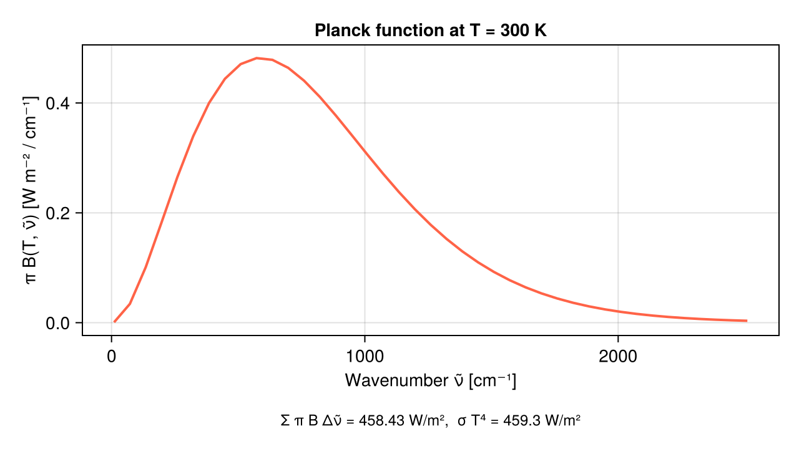

AnalyticBandRadiation.jl
Analytic-band atmospheric radiation for intermediate-complexity models.
This package bundles two per-column radiation schemes:
WilliamsLongwave— 41-wavenumber clear-sky two-stream Schwarzschild solver using analytic H₂O line, H₂O continuum and CO₂ absorption coefficients after Williams (2026), J. Adv. Model. Earth Syst., doi:10.1029/2025MS005405.OneBandShortwave— SPEEDY-style one-band solver with transparent, constant, or background-transmissivity options and a diagnostic cloud and stratocumulus model, after Kucharski, Molteni & Bracco (2006).
The column solvers are pure scalar operations — no allocations, no host-side loops, GPU-safe — so the same code can be driven by SpeedyWeather.jl or by Breeze. Package extensions wire each host automatically when both packages are loaded.
Installation
using Pkg
Pkg.add(url = "https://github.com/NumericalEarth/AnalyticBandRadiation.jl")Quick look: Planck-function recovery of σ T⁴
The spectral quadrature captures ≥99 % of the blackbody flux at 300 K between 10 and 2510 cm⁻¹ — the truncation is deliberate (the scheme represents a terrestrial atmosphere, not interstellar space).
using AnalyticBandRadiation
using CairoMakie
T = 300.0
lw = WilliamsLongwave(Float64)
ν̃ = range(lw.wavenumber_min, lw.wavenumber_max, length = lw.nwavenumber)
πB = [π * planck_wavenumber(T, ν) for ν in ν̃]
fig = Figure(size = (640, 360))
ax = Axis(fig[1, 1];
xlabel = "Wavenumber ν̃ [cm⁻¹]",
ylabel = "π B(T, ν̃) [W m⁻² / cm⁻¹]",
title = "Planck function at T = 300 K")
lines!(ax, ν̃, πB, linewidth = 2, color = :tomato)
σ_SB = 5.670374419e-8
integrated = sum(πB) * (lw.wavenumber_max - lw.wavenumber_min) / (lw.nwavenumber - 1)
Label(fig[2, 1],
"Σ π B Δν̃ = $(round(integrated, digits = 2)) W/m², σ T⁴ = $(round(σ_SB * T^4, digits = 2)) W/m²";
tellwidth = false, fontsize = 12)